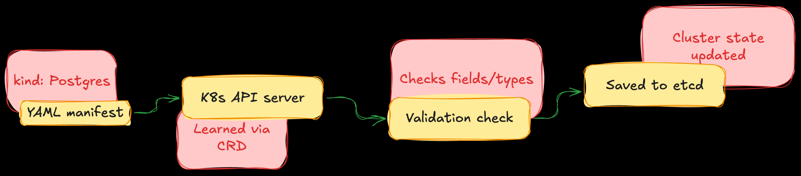

Custom Resource Definition (CRD)
It is a powerful structural blueprint that allows us to extend the core K8s API. A CRD allows us to define our own custom object type (e.g., a Database, a TLS certificate, or a BackupSchedule) directly within a system. Once we apply a CRD, the K8s cluster treats our custom object as an official, native resource just like a standard Pod.
Out of the box, K8s only understands a fixed set of built-in objects like Pods, Services, and Deployments.
|
How does it work?
A CRD works by teaching the K8s API Server a new structural schema using OpenAPI validation.

-
Definition: We write a CRD manifest that declares the new object’s group, version, names, and acceptable configurations (e.g., stating that a
Postgresresource must have an integer field calledreplicas). -
Registration: By applying the created blueprint to the cluster. The API Server updates itself and creates new API endpoints(e.g.,
/apis/://mycomapnt.com). -
Storage: When a user submits custom YAML manifests the created new blueprint, the API Server validates the data types. If correct, it saves the object directly into the cluster’s database (e.g.,
etcd).
| A CRD by itself is just a passive data record in a database. It doesn’t do anything. To make it functional, we pair it with a Custom Controller (the Operator). The Operator continuously watches that data record and provisions real resources (like servers, disks, or code) to match it. |
How to create and use a CRD (step-by-step)
Definition
The following manifest defines a brand-new resource called a Postgres. It mandates that any user trying to create one must specify a string for the engine version and an integer for the replicas.
echo >> postgres-crd.yml < "EOF"
apiVersion: apiextensions.k8s.io/v1
kind: CustomResourceDefinition
metadata:
name: ://mycompany.com
spec:
group: ://mycompany.com
versions:
- name: v1
served: true
storage: true
schema:
openAPIV3Schema:
type: object
properties:
spec:
type: object
required: ["engineVersion", "replicas"]
properties:
engineVersion:
type: string
replicas:
type: integer
minimum: 1
maximum: 10
scope: Namespaced
names:
plural: postgresclusters
singular: postgrescluster
kind: PostgresCluster
shortNames:
- pg
EOF
kubectl apply -f postgres-crd.ymlCustom Resource (CR) creation (Using the blueprint)
After applying postgres-crd.yml, our cluster knows what a PostgresCluster is.
echo >> my-db-insance.yml < 'EOF'
apiVersion: ://mycompany.com
kind: PostgresCluster
metadata:
name: production-db
spec:
engineVersion: "16.2"
replicas: 1
EOF
kubectl apply --filename my-db-instacnce.ymlTroubleshooting
-
List all registered CRDs in the cluster
kubectl get crds -
Inspect the exact validation schema of your new CRD:
kubectl describe crd ://mycompany.com -
List individual instances of our new custom object: We can use plural, singular, and short form of the resource
kubectl get pg -
View details of a specific custom instance:
kubectl describe pg production-db
| Applying an invalid custom resource manifest (e.g., passing more than 10 replicas or using string in place of integer) instantly will be rejected with a validation error by API server preventing corrupt configuration receiving to oue cluster. |
| It is possible to override or update the values inside a CRD---for example, minimum and maximum number of replicas. However, since a CRD defines the global structural schema for the entire cluster, we must follows specific rules to make these structural changes safely. |
-
Changing CRD file (the declarative way; recommended): Applying the CRD after the changes
# postgres-crd.yml (updated snippet) properties: replicas: type: integer minimum: 1 maximum: 10 -
Quick fix (the direct imperative): In this way we update the live YAML spec in our editor of choice after saving and exiting our editor. API Server instantly updates itself.
kubectl edit crd ://mycompany.com
⚠️ Critical production look around
-
Existing Custom Resource are NOT automatically validated on change. For example, the number of replicas is stored in
etcd, and changes to the main CRD won’t update it. -
Future updates are blocked: the future request on update or change on an active cluster fails if it violates the updated CRDs definitions.
-
Consistency between controller and CRDs: if the Operator code hardcoded a variable changing the definition in CRD won’t work until the Operator’s binary code respects the new limitations.